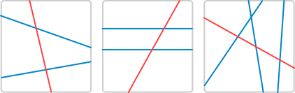
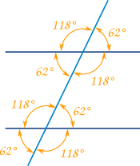

Transversals
A transversal is a line that intersects at least two other lines.
The red line is the transversal in each example:
 |
||
|
Transversal crossing two lines |
this transversal crosses two parallel lines | ... and this one cuts across three lines |
Pairs of Angles

When parallel lines are crossed by a transversal many angles are the same, as in this example:
See Parallel Lines and Pairs of Angles to learn more.
Lots of angles match up here!